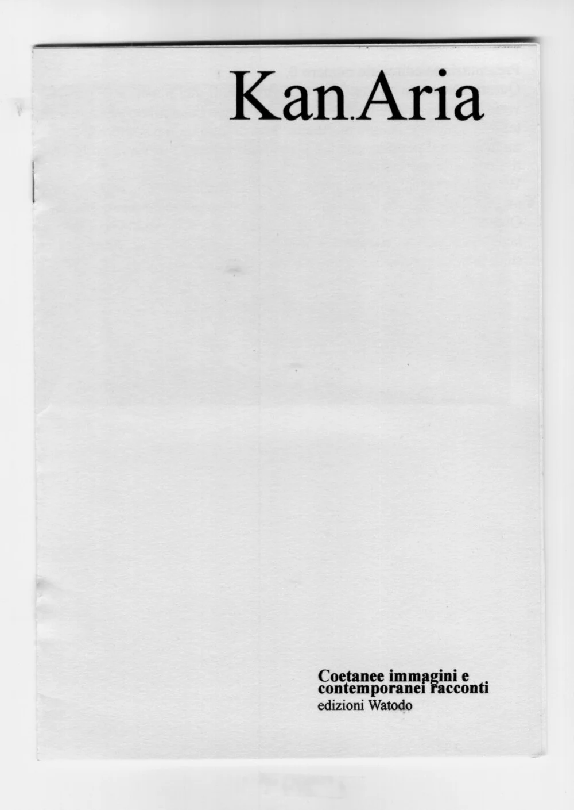
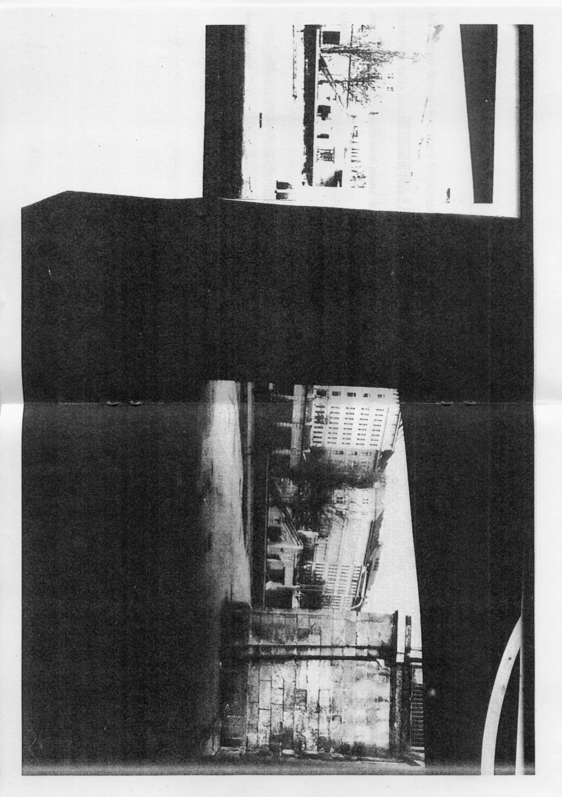
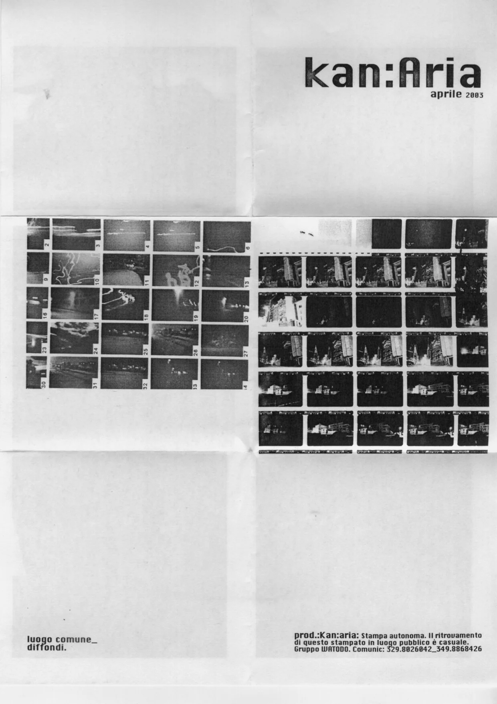
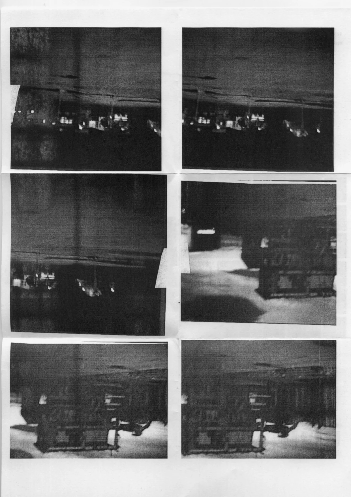

"Kan.Aria".
Fanzine. Photocopy.
Printed on UNI A4 uncoated copy-paper
Staple-bound or hand-folded.
Language: Italian
Kan.Aria or Kan Aria was a fanzine created by Watodo, an art group formed in Udine, Italy, between 2002 and 2004, operating in Grado, Udine, and Milan (Italy). The zine was intended as a visual and physical manifesto, collecting photos, collages, poetry, and artistic intents.
About the images below:
II issue, April 2003 | double-side print | hand-folded | A4 | BW Photocopy, 200 copies; I issue, January 2003 | PP 10 | A4 | BW Photocopy, 100 copies.



